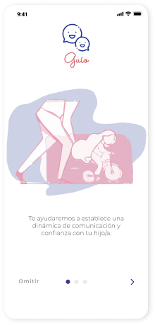
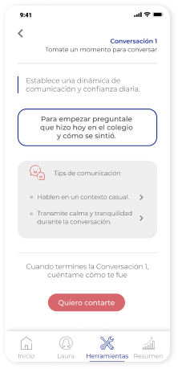
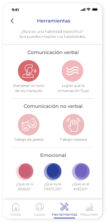

BANIGUALDAPP
Desarrollo de una web/app para los emprendedores de Fundación Banigualdad.


USER PERSONA
Entendiendo al usuario

HOW MIGHT WE?
Definiendo nuestro foco
Basandonos en nuestros User persona, enfocamos nuestra propuesta en las siguientes preguntas.
- ¿Cómo podríamos lograr que la aplicación se adapte a los usuarios de mayor edad?
- ¿Cómo podríamos hacer de esta herramienta una conexión entre emprendedores y entre los emprendedores con la fundación?
IDEACIÓN
Sketching de ideas
Con estas preguntas en mente comenzamos a dibujar nuestras ideas y conceptos para ayudar a los usuarios. Despues de realizar crazy 8 definimos nuestra idea de la siguiente forma.

Primeros Sketches
CARACTERÍSTICAS
Definiendo las funcionalidades
Las principales características de nuestra aplicación son las siguientes.
Estilo WhatsApp
Estilo visual de WhatsApp, para adaptarse a la aplicación que más usan.
Sin iconos
O cualquier elemento que sea difícil de entender para alguien que no usa muchas aplicaciones.
Información de pago
Con información detallada y destacada, se le mostrará al usuario su estado de pago y de ciclos.
LA SOLUCIÓN
Decisiones de Diseño
Para el primer prototipo utilizamos figma y desarrollamos una interacción básica. Después de realizar algunos cambios en la arquitectura de la información y componentes visuales. Desarrollamos la siguiente iteración, diseñada con componentes de materialize, para optimizar el trabajo de las Desarrolladoras FE.

Pantalla de onboarding

Sección chatbot
Cuando se abre la aplicación por primera vez se explica brevemente las
características de
esta, a través de onboarding.
Luego, una vez se inicia sesión, el usuario debe hablar con el chatbot/AI
personificada como la “psicóloga Laura”. Las preguntas son respondidas con
alternativas
mostradas en la parte inferior.

Sección de resumen

Pantalla de inicio
Terminando la conversación con el chatbot, se le muestra el informe que se genera
a partir de sus respuestas.
Posteriormente se le presenta una pauta establecida según sus respuestas. Está
divididas en etapas, permitiendo un avance gradual.

Detalle de la etapa "Conversación 1"

Herramientas comunicacionales
Dentro de cada etapa, se le ejemplifica al padre formas de poder mejorar en esta
etapa. También se les presenta distintos “tips” que se adecuan a la tarea
establecida.
Para que puedan entender y manejar cada “tip”, se les entrega, además,
herramientas
de comunicación, de comprensión de las emociones e incluso de orientación para
realizar denuncias.
EL PROTOTIPO
CONCLUSIÓN
Reflexión y próximos pasos
En este proyecto me pareció interesante poder conocer emprendedores y aprender de sus experiencias. Además, se presentó un desafío diferente, que fue el trabajar en equipo con Desarrolladoras Front-End. Aprendí que es importante incluir a todos los integrantes del equipo en el proceso de ideación, ya que gracias a eso logramos estar en sintonía, organizarnos bien y desarrollar una propuesta aterrizada y lograble. Gracias a esto fuimos seleccionadas como el equipo ganador de la Hackatón.
Discusión Adicional
Puntos que no fueron abordados en este resumen, pero que puede ser interesante discutirlos en persona:
- Selección del perfil de la psicóloga
- Análisis de referentes